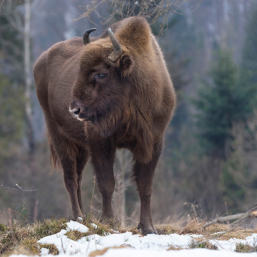
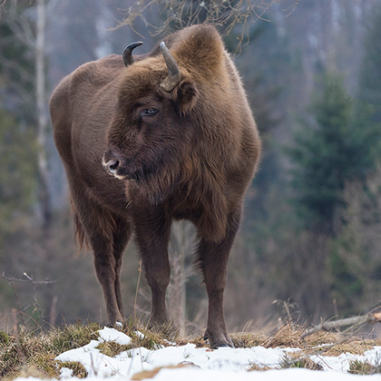

Амурский тигр (уссурийский или дальневосточный, лат. Panthera tigris altaica) - один из самых малочисленных подвидов тигра. Самый большой из тигриного семейства обитает в основном на юго-востоке России, по берегам рек Амур и Уссури в Хабаровском и Приморском крае. Бескрайняя тайга - вот его стихия. Более всего амурские тигры распространены в предгорьях Сихотэ-Алинь в Лазовском районе Приморского края, где на сравнительно небольшой территории живет каждый шестой дикий амурский тигр (2003).
Вряд ли найдется животное, способное сравниться с амурским тигром по красоте и могуществу. По размерам амурский тигр является самым крупным представителем семейства кошачьих, обгоняя даже царя зверей - льва и ничуть не уступая ему по степени хищности. Длина его тела колеблется от 2,7 до 3,8 м, рост в холке составляет 99-106 см. Весить он может до 250 кг, хотя встречаются и гораздо более массивные экземпляры.
Регулярная перепись амурских тигров говорит о том, что их осталось крайне мало. Всего в России на 1996 год насчитывалось около 415-476 особей. В зоопарках мира на 20 февраля 2007 года содержалось около 450 особей. Основной причиной этого является уничтожение человеком ареала обитания амурского тигра, вырубка таежных лесов. Истощение кормовой базы тигра ведет к сокращению его численности. Этим крупным хищникам нужны довольно обширные охотничьи территории - около 100 км2 на одного зверя. Второй насущной проблемой является браконьерство. В Китае за убийство амурского тигра полагается смертная казнь, в России же только штрафы, поэтому амурского тигра активно убивают ради красивой шкуры и внутренних органов. Изготовленные из них снадобья и настойки, согласно китайской медицине, придают человеку особую силу и помогают при самых разных недугах.
Тем не менее, работа по сохранению амурского тигра ведется. Согласно данным Всемирного Фонда защиты дикой природы, численность амурского тигра в настоящий момент удалось стабилизировать на уровне более 450 особей, что дает надежду на сохранение этих красивых животных.


Белёк - это детеныш нерпы, или гренладского тюленя. Одиннадцать месяцев тюлениха вынашивает единственного детеныша, чтобы с приходом весны родить его на льду Белого моря. Около двух недель после рождения, пока мама кормит его молоком, мех белька остается белоснежным и, к несчастью, очень ценным. В течение этих двух недель на лед выходят люди с железными дубинами, которыми насмерть забивают десятки тысяч новорожденных. Россия - единственная в мире страна, где не запрещено такого рода массовое убийство.
В результате активной борьбы общественности против этого варварского промысла продажа меха белька полностью запрещена в Европе и США. Благодаря активным действиям зоозащитников с 2008 г. в России на промысел бельков был объявлен мораторий. НО!!! бельки быстро подрастают, их мех становится серым, но ценность свою не теряет, и начинается забой серки. Необходимо добиться законодательного запрещения бойни.
Зубр - единственный дикий вид крупных быков Европы, уцелевший до наших дней. Этот мощный и красивый зверь олицетворял силы природы, имел культовое значение, ему поклонялись как одному из символов родной земли. Наиболее крупные быки могут достигать веса 850 кг, а иногда - до 1200 кг.
Браконьерство, вырубка и выжигание лесов, ничем не ограниченный отстрел животных - все это привело к тому, что к 1927 г. в природе зубр был полностью истреблен. Проведенная в 1926 г. международная перепись содержащихся в неволе зубров выявила, что во всем мире, в различных зоосадах и парках сохранились лишь 52 зубра.
Целенаправленное разведение в зоологических садах, парках и лесных резерватах, создание специализированных питомников и выпуск молодых животных в природу позволили значительно увеличить численность зубров. В середине 1980-х в СССР было порядка 1100 зубров, в том числе около 300 в России. Но к концу 1990-х вольные популяции чистокровных зубров на Кавказе были практически уничтожены, а всего в России зубров осталось меньше 200.
 
